Zehn doppelseitige Designkonzepte für Sebastian Schucht, basierend auf dem offiziellen Logo und dem WirkVektor-Designsystem. Jedes Konzept inkl. Empfehlung für Veredelung (Heißfolie, Blindprägung, Letterpress, Spot UV).
Hochformat. Logo zentral in Impact-Cyan auf einem dezenten Wortmarken-Muster. Die Vorderseite ist reines Branding-Statement, die Rückseite klassisch-strukturiert mit Logo, Wortmarke und Kontaktblock.
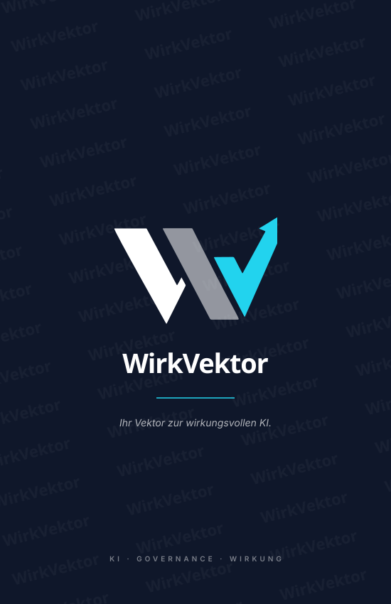
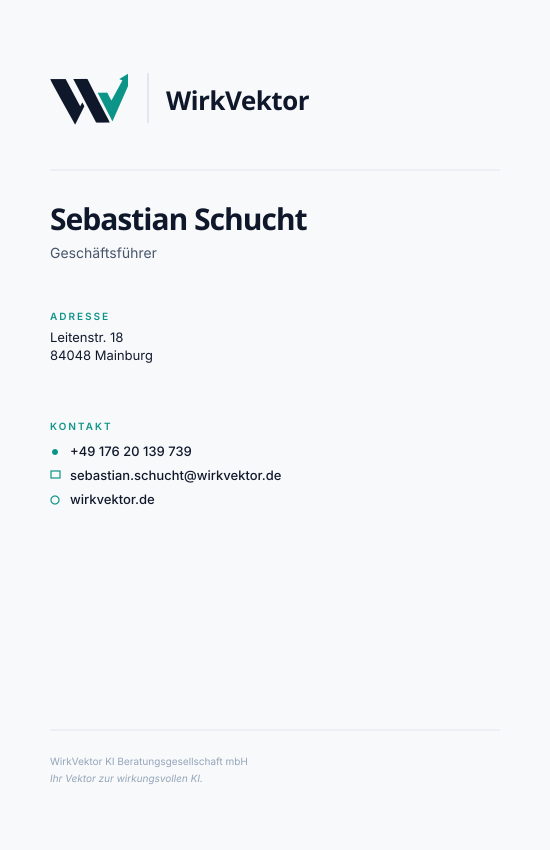
Querformat. Die geprägte Wortmarke ist Hauptdarsteller, das Logo bleibt klein oben links als Signatur. Auf der Rückseite eine groß angelegte Logo-Outline als Blindprägung rechts, daneben die Kontaktdaten.
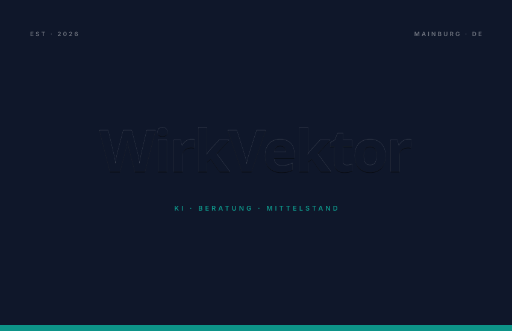
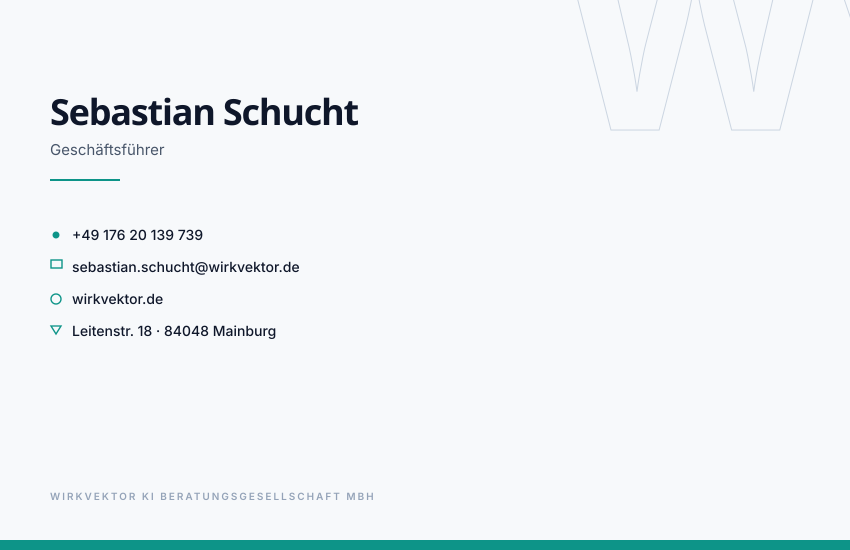
Querformat mit abgerundeten Ecken und Cyan-Edge oben/unten. Logo + Wortmarke unten links, Name + Kontakt rechts mit vertikaler Trennlinie. Die Rückseite zeigt das gesamte Logo + Wortmarke in tonaler Spot-UV-Optik.
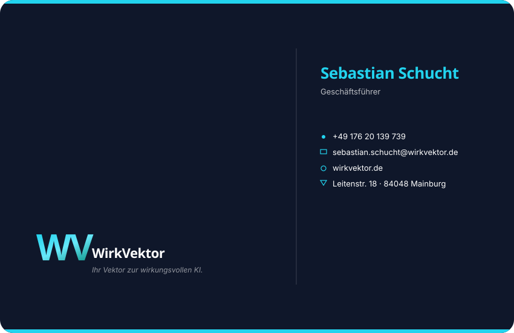
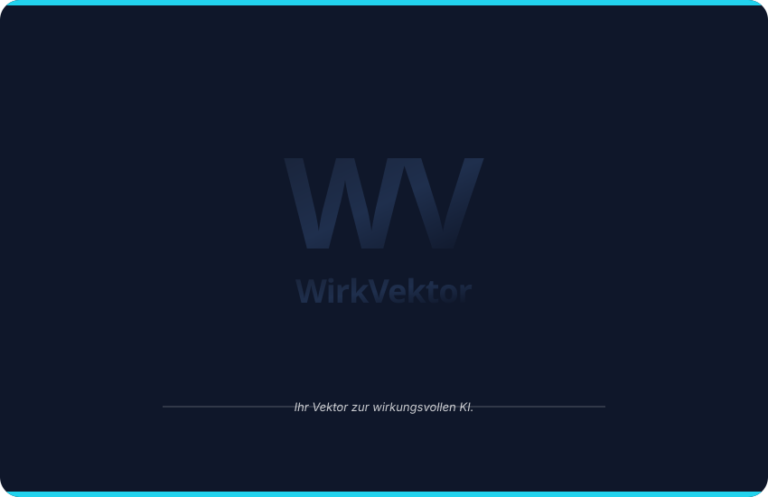
Querformat. Großes Logo zentral als Heißfolienprägung mit metallischem Cyan/Teal-Verlauf. Die Vorderseite ist eine reine Logo-Inszenierung; die Rückseite klassisch ruhig mit allen Kontaktdaten.
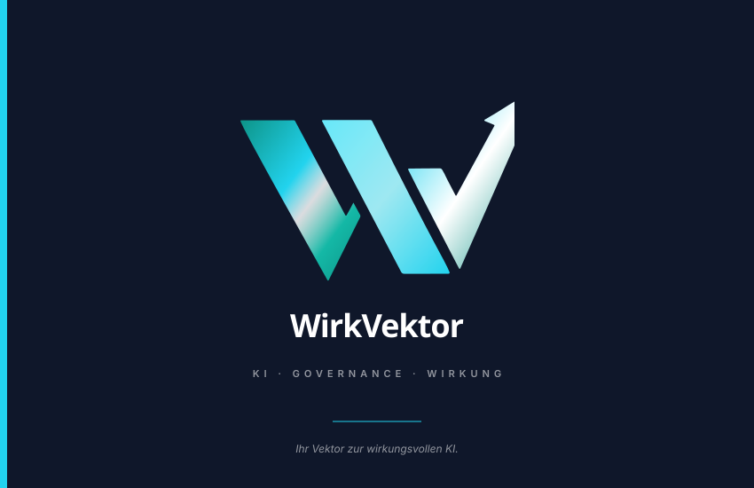
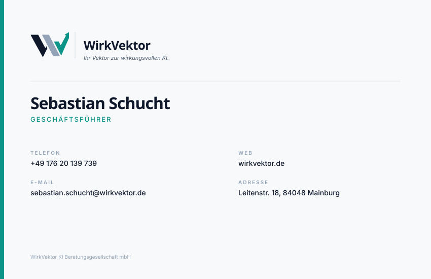
Querformat. Vorderseite mit QR-Code als vCard (digitale Übergabe per Scan), Name groß oben links, Logo klein oben rechts. Die Rückseite zeigt das Logo + Wortmarke groß in Blindprägung auf Navy.
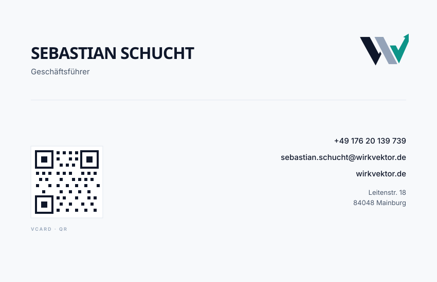
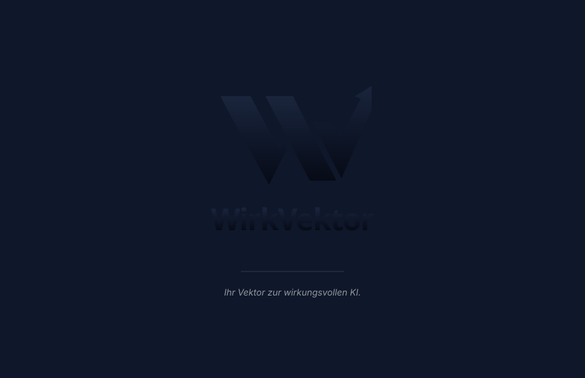
Hochformat. Logo zentral in einer Cyan-Box, Wortmarke + Claim + Name vertikal gestaffelt. Die Rückseite mit linker Teal-Akzentleiste und sauber strukturierten Kontaktblöcken.
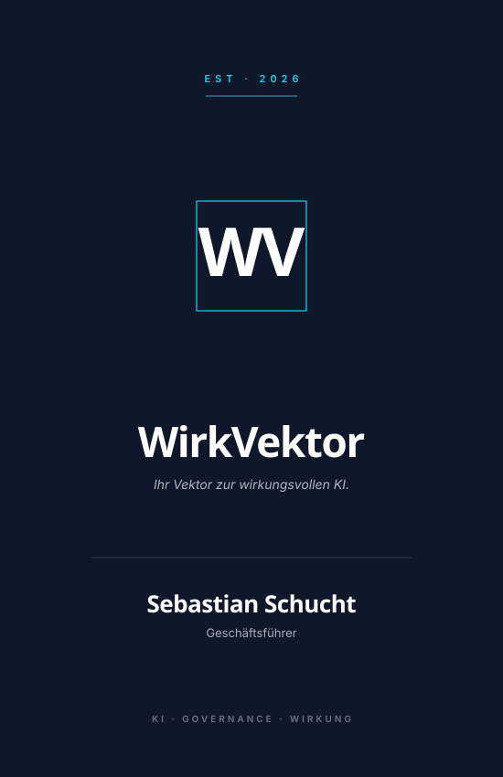
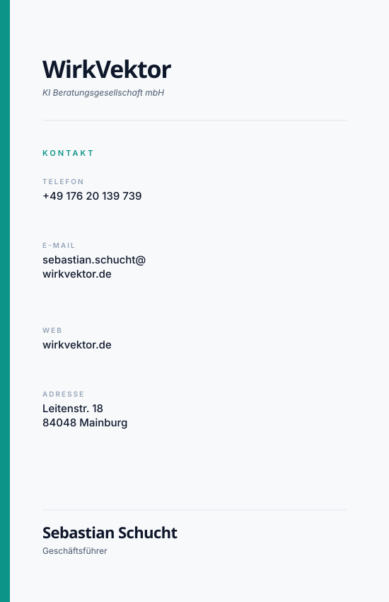
Querformat. Magazin-Stil: Name dominant rechts, Logo klein unten links als Signatur. Sehr viel Weißraum. Die Rückseite ruhig in Navy mit zentralem Logo + Claim zwischen zwei dünnen Linien.
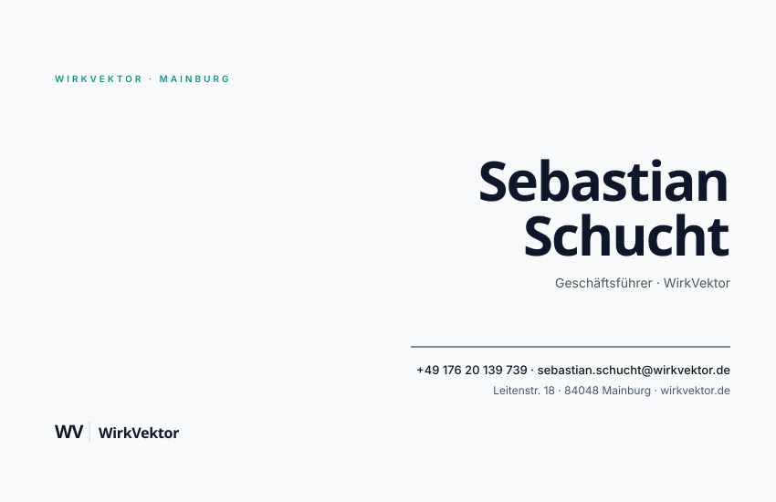
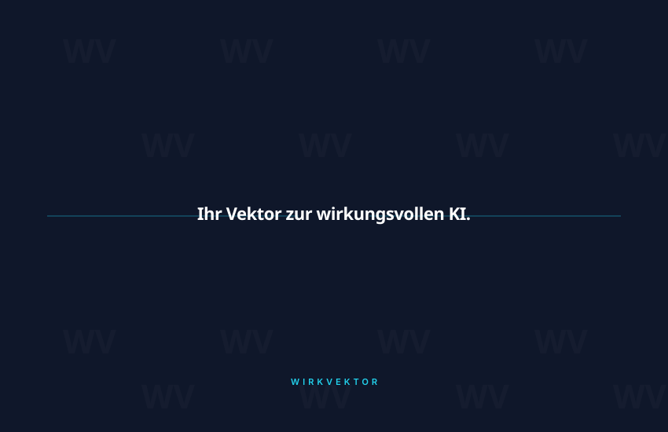
Querformat. Vertikale Teilung: ein Drittel Vector-Teal-Block links (Logo Mono-Weiß), zwei Drittel Off-White mit Name und Kontakt rechts. Die Rückseite ergänzt mit oberer Navy-Leiste und einer Drei-Säulen-Struktur (Strategie · Governance · Umsetzung).
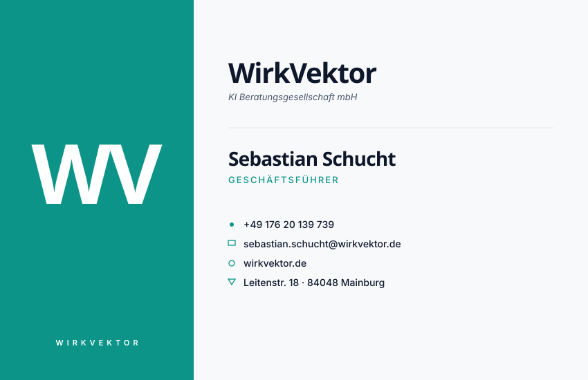
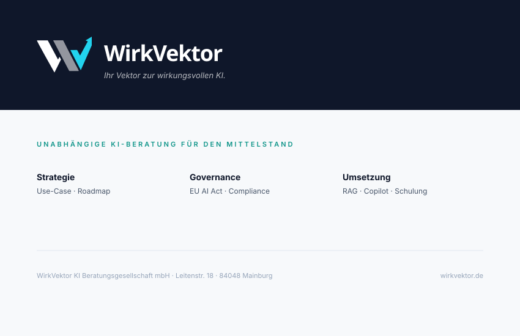
Querformat. Feines Koordinaten-Grid im Hintergrund (Technical Edge) mit Achsenmarkern X₀/X₁/Y₀/Y₁. Logo zentral, Wortmarke darunter in Cyan. Die Rückseite spiegelt das Grid in Off-White und zeigt Name + Kontakt zweispaltig.
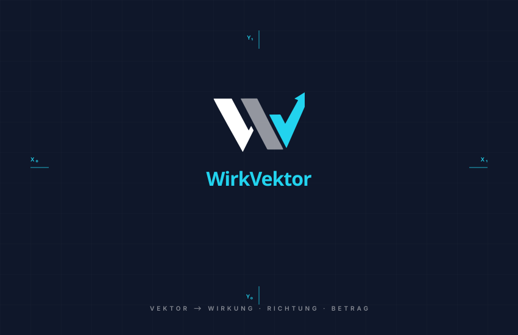
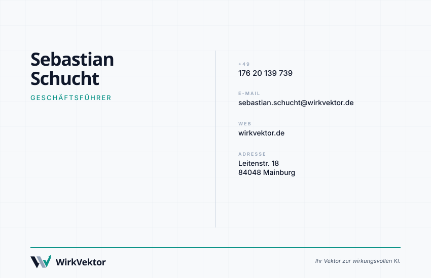
Querformat. Die Vorderseite zeigt nur Logo + Wortmarke als tonale Spot-UV-Glanzlack-Veredelung — gleiche Farbe wie der Hintergrund, anderer Glanz. Maximal reduziert. Die Rückseite klassisch mit Logo, Wortmarke, Name und ausführlichen Kontaktdaten.
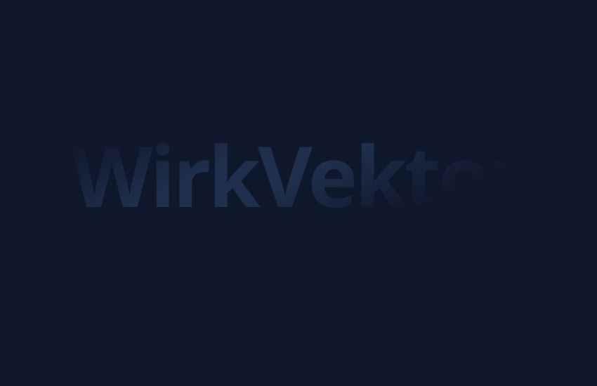
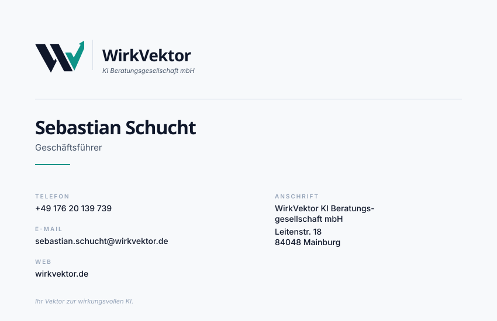